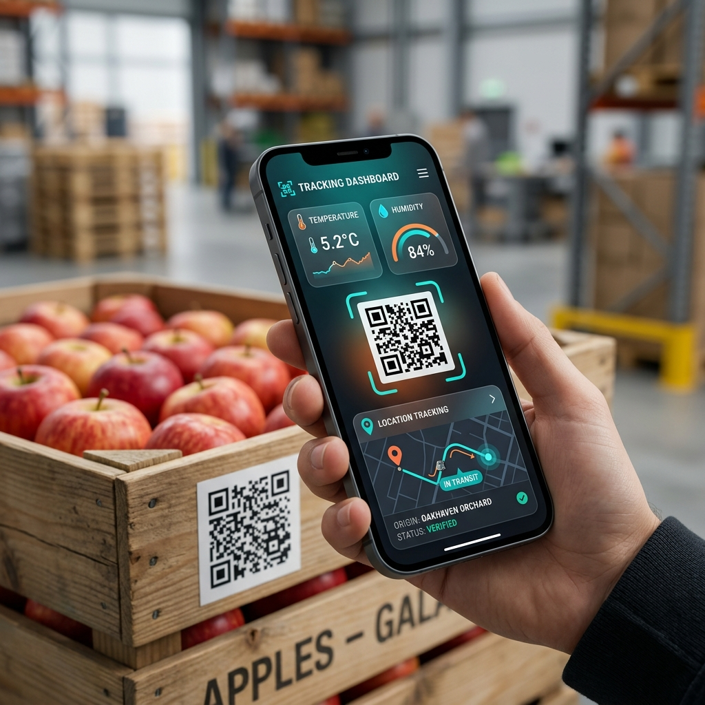

전북대학교 스마트농생명시스템학과 (Jeonbuk National University)
The fresh agricultural product supply chain involves complex and multi-stage processes from production to consumption. However, fragmented information sharing has long hindered effective quality control and the stable management of supply and demand. To address these challenges, this study proposes an advanced platform for intelligent end-to-end logistics management by integrating dynamic QR code-based data collection with digital twin technology, which mirrors real-time field data in a virtual environment. The proposed system connects data collected via dynamic QR codes across farms, agricultural product processing complexes (APCs), and transportation stages with a digital twin platform. By digitizing on-site conditions in real time, the system enables managers to intuitively monitor and control the entire distribution process. It also ensures data continuity by integrating diverse information streams into a unified framework, allowing remote inspection through virtual models that accurately replicate real-world conditions. Furthermore, the synchronization of multi-dimensional data establishes a robust management system capable of monitoring the distribution environment regardless of location. The results demonstrate that real-time synchronization between field data and the digital twin platform supports proactive decision-making and dynamic route optimization in response to unexpected events. Additionally, the system enhances consumer trust by providing transparent and up-to-date information on fresh produce distribution beyond simple historical records.
현재 신선 농산물 공급망은 데이터 단절과 실시간 모니터링 능력 부족으로 인해 큰 어려움을 겪고 있습니다. 기존의 정적(Static) QR 코드는 고정된 정보만을 제공하므로 유통 및 저장 과정에서 발생하는 동적인 상태 변화를 반영하지 못합니다.
1. 시스템 구성 및 아키텍처 (System Architecture)
Figure 1. 통합 디지털 트윈 공급망의 개념적 프레임워크.
2. 기술 스택 및 동기화 엔진 (Technical Stack)
3. 하이브리드 온/오프라인 데이터 관리

Figure 2. 다이나믹 QR 인터페이스 및 실시간 데이터 미러링.
본 연구는 다이나믹 QR 코드와 디지털 트윈 기술의 통합이 예측 불가능한 환경 변화에 선제적으로 대응하고, 소비자에게 최상의 신뢰도를 제공하는 혁신적인 솔루션임을 입증했습니다.
[1] 김성민 외. (2024). 스마트 농산물 산지유통센터(APC)를 위한 디지털 트윈 응용 연구.
[2] 한성민 외. (2025). 식품 추적성을 위한 다이나믹 QR 코드 시스템 개발.